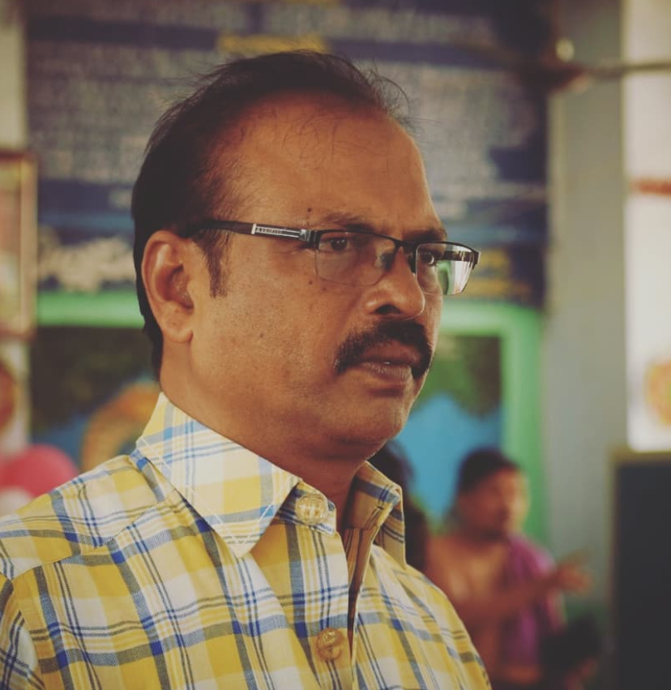

<!DOCTYPE html>
<html lang="en" dir="ltr">

<head>
  <meta charset="utf-8">
  <title>Know the Artist</title>
  <link rel="stylesheet" href="css/abouttheartist.css">
  <link rel="stylesheet" href="https://fonts.googleapis.com/css2?family=Raleway&display=swap">
<style>
body {
    font-family: 'Raleway';
}
</style>
</head>

<body>
  <header>
    
    <h1>Mangalagiri Textiles</h1>
    <nav>
      <a href="file:///C:/Users/ASUS/Documents/GitHub/Sayantanee_Mahanta/Assignment_3/index.html">Home</a>
      <a href="file:///C:/Users/ASUS/Documents/GitHub/Sayantanee_Mahanta/Assignment_3/presentstatus.html">Present Status</a>
      <a href="#">Process</a>
      <a href="#">Marketing</a>
      <a href="#">Bibliography</a>

    </nav>
  </header>
  <main>

  <section class="about">
    
    <div class="content">
      <div class="c1">
        <p>Name: <span>Mr. Ganji Ravindranath</span></p>
        <p>Position: Master Weaver</p>
        <p>Age: 60 years old</p>
        <p>Education Qualification: 10th Grade</p>
        <p>Monthly Income: Rs24,000/- (provided by the Government)</p>
      </div>
      <div class="c2">
        <p>Born in February,1961,Mr Ganji Ravindranath was brought up in Mangalagiri, Guntur District,
          Andhra Pradesh. His house is located in the weaver’s colony . This proud father of one is an
          owner of a handloom store along with his siblings ( three brothers and two sisters), which sells
          the beautiful Mangalagiri sarees and textiles,he has been in the business for over 45 years or
          more. Being born into a family of expert weavers who have contributed over 100 years into this
          craft, it came as no surprise when Mr Ganji Ravindranath developed a keen interest in the craft
          from a very young age.
          image courtesy : Instagram
          He has attended school and has finished his secondary education ( tenth grade). He apprenticed under his father learning the techniques. With time he became increasingly proficient in
          the techniques. Mr Ganji Ravindranth believes in the strong principle of making pure handloom
          sarees and providing employment to the weavers. He is recognized as a Master Weaver in
          Mangalagiri town, he has provided employment to almost 1200 people both male and female.
          He even owns a loom where he has employed almost 10 weavers who are above the age of
          35, with the reduced amount of assistance from the government in the handloom sector, with no
          help or benefits, he addresses his concern that the craft is likely to die a slow death in less than
          10 years, due to the constant reluctance shown by the young weavers to take up weaving as a
          career option.
          Mangalagiri sarees and textiles have helped him to secure an income while tending to his family. The government pays him 24,000 rupees every month and he addresses the problem that,
          nothing is provided by the government to the workers who are working under him.
          Mr Ganji Ravindranath was a part of an exhibition organised in Delhi In 1994. He has also taken part in exhibitions at Ahmedabad, Bombay, etc. He supplies fabric and sarees to FabIndia,
          Reliance and Tata. He has done business in Delhi for a few years since 1994. He rented out a
          house in Sardarjung Enclave there and sold sarees. Presently, he is a supplier of sarees, dupatta and running fabric to Fab India, nationwide. He has over 300 to 400 wholesale and retail clients now. He has started out online because of
          the Pandemic now. He was also sent to Malaysia by the central government to participate in an exhibition there for 10 days.
          Mr Ganji Ravindranath is an industrious man with a beaming smile. He is keen to see the development of the Mangalagiri sarees and textiles and see the new generation to take up this
          craft. He hopes that the younger generation will recognise their efforts and popularise the craft
          with the global community</p>
      </div>
    </div>
  </section>
  <section class="backstory">
    <h1>History</h1>
    <div class="parts">
      <div class="origin">
        <h3>Origins</h3>
        <p>The Mangalagiri sarees have a history of more than five centuries. long before the sarees got
          popularised, Mangalagiri was famous for its pilgrimage .The temple of Lord Panakala Narasimha Swamy is located in the centre of the town and is believed to have been there since the Satya Yuga. It is said that under the present temple lies
          the former Lakshmi Narasimha Swamy
          temple, the one in which the main idol was installed by Yudhistira.
          In around 1593, during the rule of Qutub Shahi, heavy taxes were imposed on the handloom
          sarees of this region. As a result of this, the weavers started to move out of this town and started settling in other handloom centres of the state. This affected the weaving activities of this
          town. Later, the succeeding rulers of this region opted for more sympathetic practices and reduced the taxes.</p>
      </div>
      <div class="Patronage">
        <h3>Patronage</h3>
        <p>The Lord Panakala Narasimha Swamy temple that we see today, was built by Raja Vasireddi
          Venkatadri Naidu between the years 1807-1809. As per the tradition in ancient times, the pilgrims needed to buy a saree from the local weavers after offering respect to the lord. It was
          a way of giving the weavers a livelihood and thus increasing the popularity of these sarees.
          There are three Narasimha Swamy temples in Mangalagiri – the Panakala Narasimha Swamy
          on the hill, the Lakshmi Narasimha Swamy at the foot of the temple and the Gandala Narasimha Swamy at the top of the hill.A few 100 years back it all started with ‘muthaka sarees’, 50
          years later ‘silver jeri sarees’ and for the past 30 to 40 years ‘Mangalgiri Nizam border sarees’
          have become a popular choice worldwide.</p>
      </div>
    </div>
  </section>
  </main>
  <footer>
    <div class="end1">
      <h2>Contact Us</h2>
      
      <a href="https://www.instagram.com/ganjihandloom_sarees_/"></a>
      <a href="9739438409"></a>
    </div>
    <div class="end2">
      <p>Mangalagiri Town</p>
      <p>Dist.Guntur, Andhra Pradesh</p>
      <p>Pincode- 522503</p>
    </div>

  </footer>
</body>

</html>
